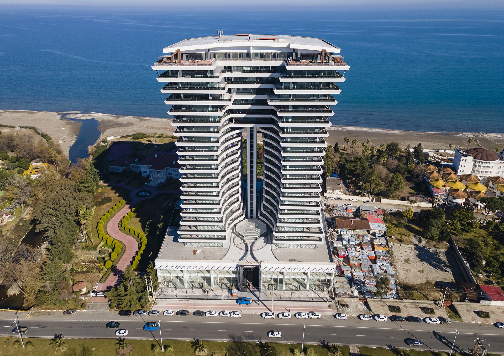
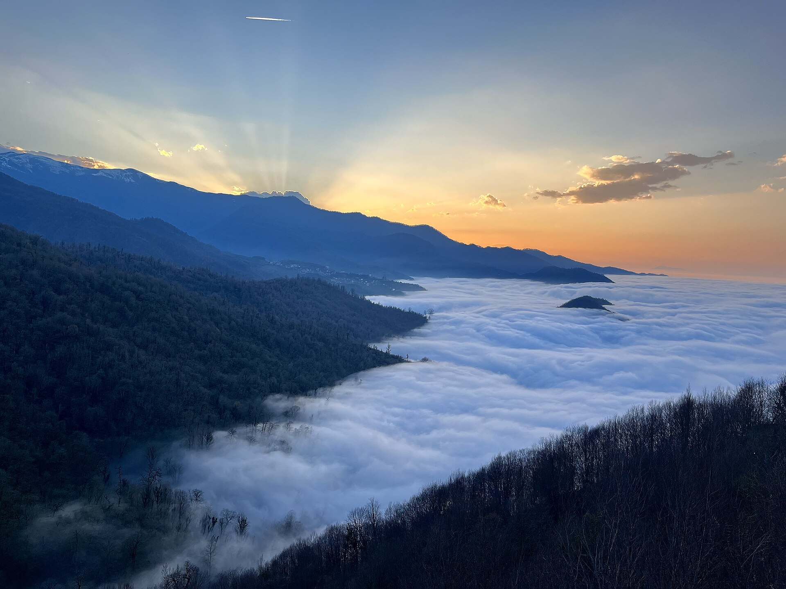

نخست / موقعیت و منطقه
موقعیت و جاذبههای رامسر
معرفی چشماندازهای طبیعی و جاذبههای شناختهشده رامسر، همراه با راهنمایی برای تکمیل اطلاعات دقیق موقعیت پروژه.
منطقه رامسر
میان دریا، جنگل و دامنههای البرز
رامسر بهواسطه همنشینی ساحل دریای خزر و دامنههای سرسبز البرز، از شناختهشدهترین مقصدهای طبیعتگردی شمال ایران است. معرفی منطقه در این صفحه با هدف آشنایی مخاطب با بافت طبیعی و جاذبههای عمومی انجام میشود.



برای تکمیل مشخصات
اطلاعات موقعیت پروژه
برای آنکه موقعیت پروژه دقیق و قابل استفاده باشد، بهتر است نشانی کامل، مختصات نقشه، مسیرهای دسترسی و فاصلههای تقریبی از نقاط مهم بر اساس منبع معتبر ثبت شوند. این بخش برای تکمیل این اطلاعات در نظر گرفته شده است.
| شهر و استان | رامسر، استان مازندران |
|---|---|
| نشانی دقیق | پس از تأیید نشانی رسمی درج شود. |
| مختصات نقشه | پس از بررسی و تأیید موقعیت ثبتی یا میدانی افزوده شود. |
| مسیرهای دسترسی | بر اساس مسیرهای رسمی و قابل بررسی تکمیل شود. |
جاذبههای معرفیشده مربوط به منطقه رامسر هستند و بهتنهایی به معنای قرارداشتن پروژه در مجاورت مستقیم آنها نیستند. فاصلهها و زمانهای دسترسی باید جداگانه بررسی شوند.